0270 – New finishes: pick what the app should get
Every picture is the real app's renderer (Cycles, 64 samples, the app's Product studio light) on invented shapes that came in through the app's own STEP importer – coarse CAD meshes, no UV maps. Rendered on the 4-core web machine (no graphics card). ★ = my recommendation (ticked to start with). Tick what task 0274 should build, press Copy and paste the line to the lead.
Like the photo: an invented headphone-like set with the best picks
Knob: diamond knurl 0.8 mm with spun end · cap: spun aluminium · cups: moulded cross-hatch (colour from the group) · headband: soft-touch · yokes: bead-blasted aluminium · cushions: leather grain · grille: speaker cloth. 1920 × 1080, 96 samples.
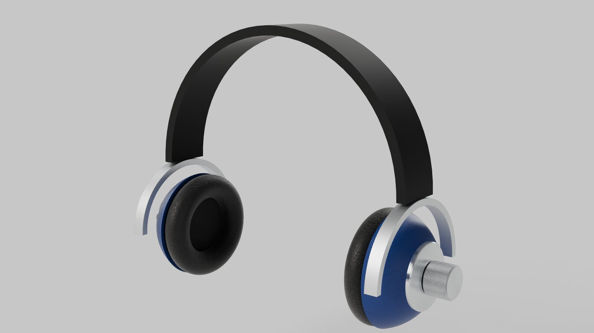
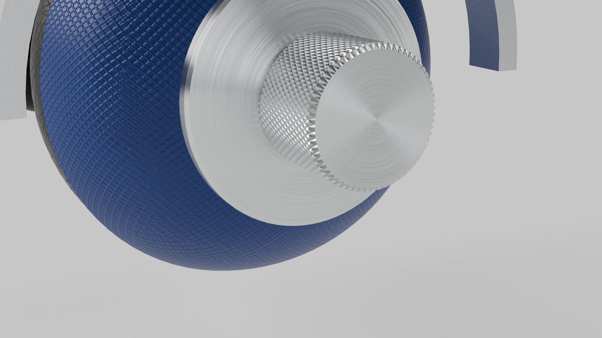
The finishes
Diamond knurl effort S · 81 nodes
Looks real at once – the knob of the owner's photo. Seamless round every face (whole number of teeth), no UV map. Needs the face data written once per mesh (fast, ~ms).
- Real size
- pitch 0.8 mm (DIN 82 RGE 0.8), 30°; whole number of teeth round each face
- Direction from
- the CAD face's own axis + its own radius (round faces only, outside)
- Render cost
- 960 × 540: 37.5 s vs 35.4 s plain (+6 %) · 1920 × 1080: 145.6 s vs 139.3 s plain (+5 %) (product shot, 64 samples, 4-core CPU)
- Settings
- Pitch (0.5 · 0.8 · 1.0 · 1.2 · 1.6 mm), Angle (30° / 45°)
- Offered with
- Steel machined, stainless, aluminium machined / anodized, brass
- Web 3D model
- average (the pattern follows each face's own axis: no shared 0.2 m tile)

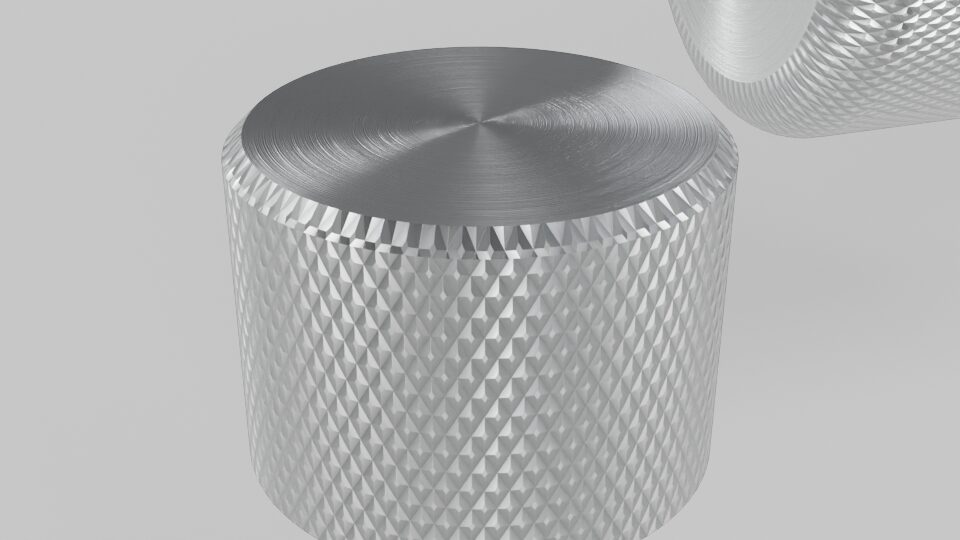

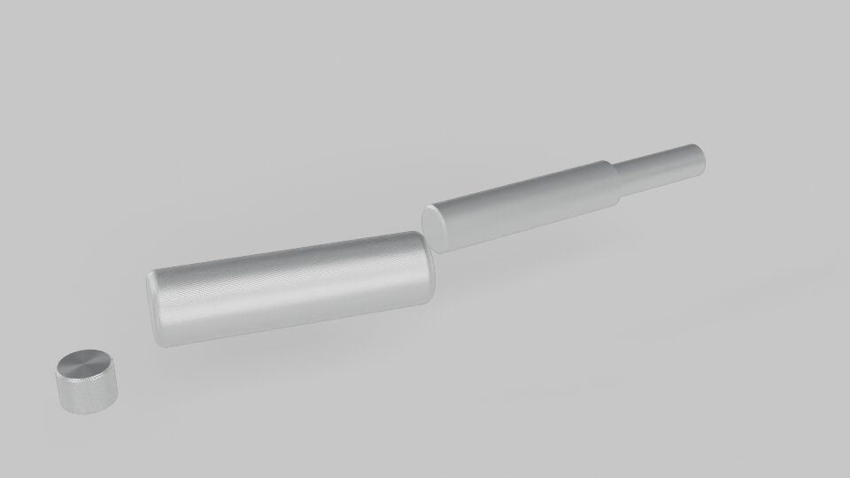
Straight knurl effort S · 75 nodes
Same machinery as the diamond knurl; one setting apart.
- Real size
- pitch 1.0 mm (DIN 82 RAA 1.0)
- Direction from
- the CAD face's own axis + radius
- Render cost
- 960 × 540: 38.7 s vs 34.0 s plain (+14 %) (product shot, 64 samples, 4-core CPU)
- Settings
- Pitch
- Offered with
- as diamond knurl
- Web 3D model
- average

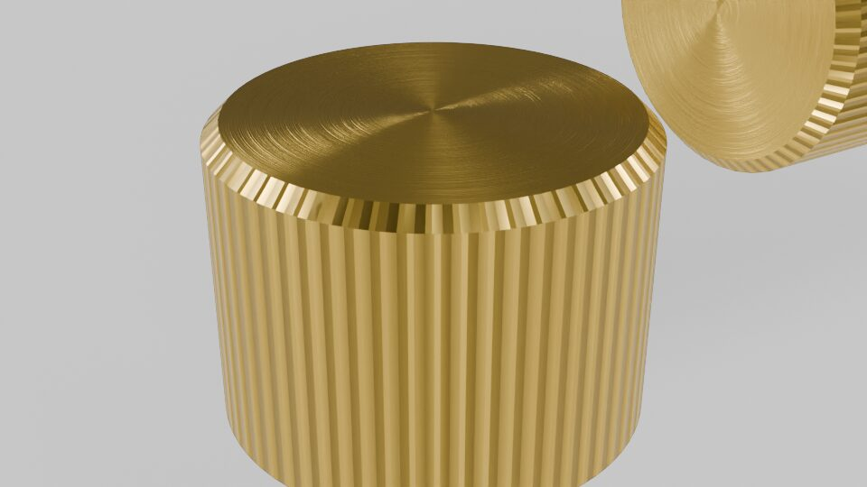

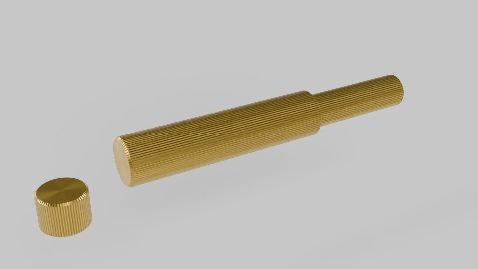
Spun / concentric aluminium effort S · 52 nodes
The radial highlight on the cap is the whole look of a spun part; reuses the turned-marks idea on each face's own centre.
- Real size
- rings ~0.05 mm (seen as one radial highlight), a faint wider ring every ~1 mm
- Direction from
- the axis of the face (end faces: the round face they close; else the part's round axis)
- Render cost
- 960 × 540: 36.6 s vs 35.4 s plain (+3 %) · 1920 × 1080: 141.2 s vs 130.2 s plain (+8 %) (product shot, 64 samples, 4-core CPU)
- Settings
- Strength (how far the highlight stretches)
- Offered with
- Aluminium machined / anodized, stainless polished, brass
- Web 3D model
- average (no anisotropy in the web model)

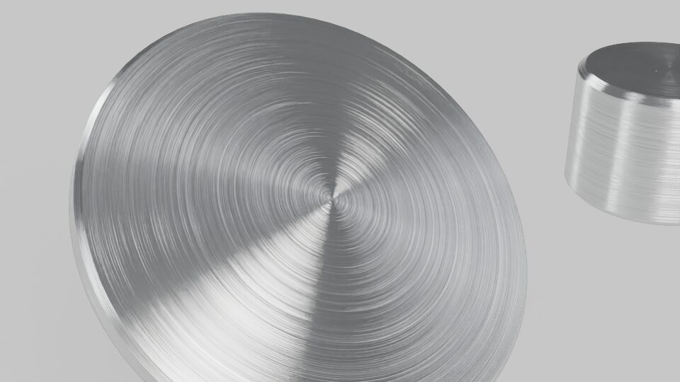

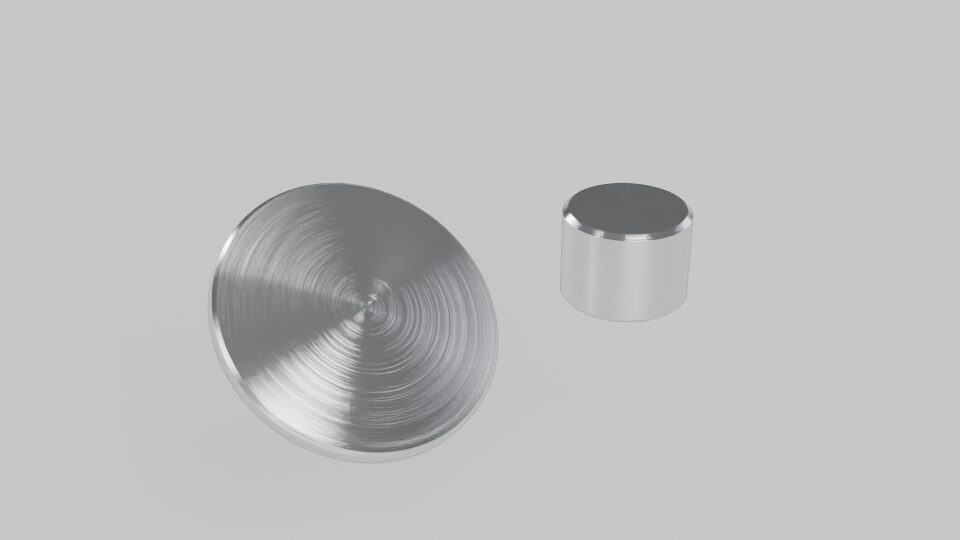
Faced end (spiral) effort S · 60 nodes
Visible spiral only in a close-up; spun covers most uses. Cheap add-on to spun.
- Real size
- feed 0.25 mm per turn (one spiral groove)
- Direction from
- the face's axis (end faces)
- Render cost
- 960 × 540: 37.4 s vs 35.5 s plain (+5 %) (product shot, 64 samples, 4-core CPU)
- Settings
- Feed
- Offered with
- Steel turned, aluminium machined, brass
- Web 3D model
- average

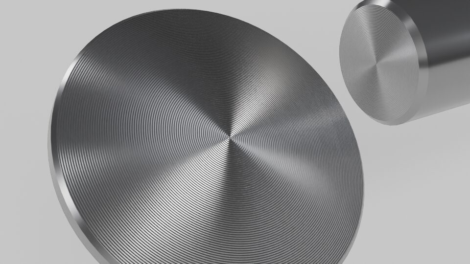

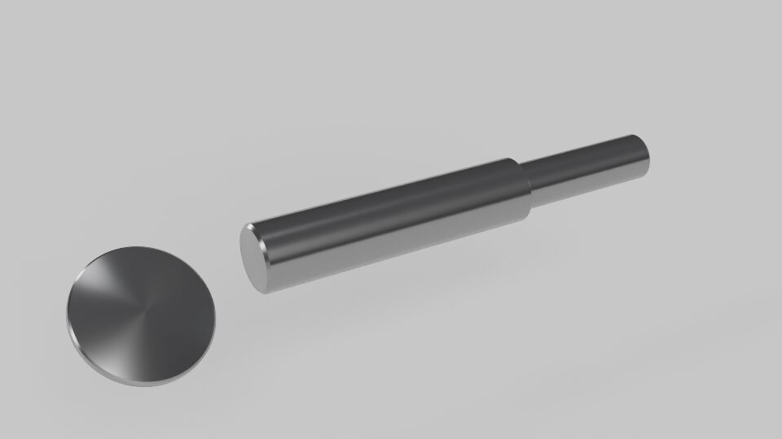
Moulded cross-hatch (shell) effort M · 75 nodes
Works on the double-curved cup without stretching; on 45° slopes the three projections blend and the grid goes softer (visible in the close-up only).
- Real size
- grid 0.9 mm at 45°, lines 0.2 mm, raised 0.1 mm
- Direction from
- triplanar in the part's own box axes (blended on curved faces)
- Render cost
- 960 × 540: 38.7 s vs 35.4 s plain (+9 %) · 1920 × 1080: 150.3 s vs 138.0 s plain (+9 %) (product shot, 64 samples, 4-core CPU)
- Settings
- Pitch, Angle (0° / 45°)
- Offered with
- Plastic matte / gloss (colour from the group)
- Web 3D model
- holds at 2048 px tiles (normal map); 1024 px blurs it

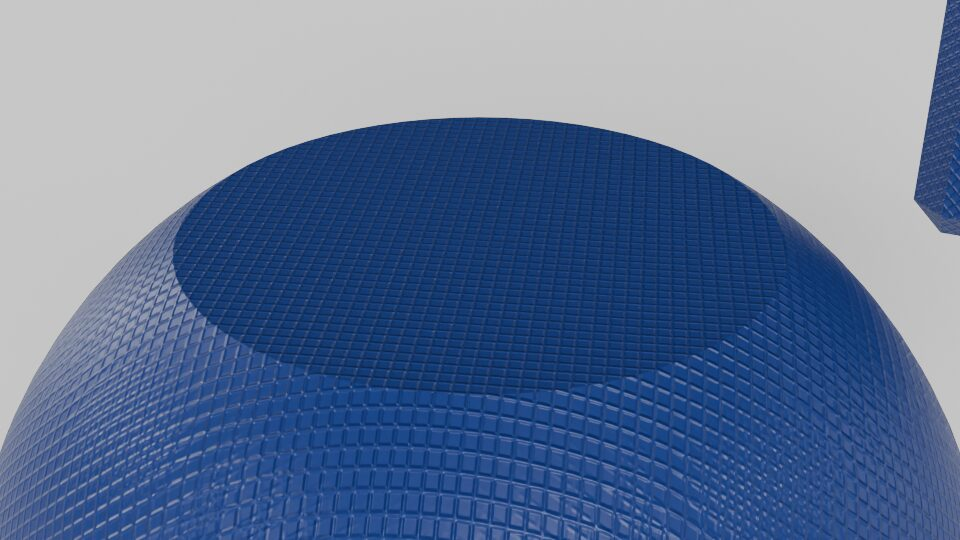

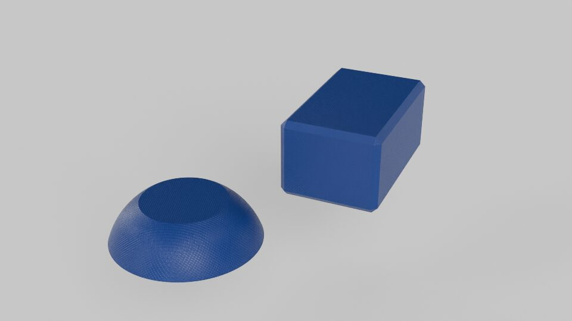
Woven fabric / speaker cloth effort S · 115 nodes
Convincing speaker cloth in a product shot; threads show only at close range.
- Real size
- plain weave, threads 0.5 mm
- Direction from
- triplanar in the part's own axes
- Render cost
- 960 × 540: 37.4 s vs 34.6 s plain (+8 %) (product shot, 64 samples, 4-core CPU)
- Settings
- Thread size, colour from the group
- Offered with
- new: Fabric (colour)
- Web 3D model
- average colour + roughness (0.5 mm threads are 2.5 texels)

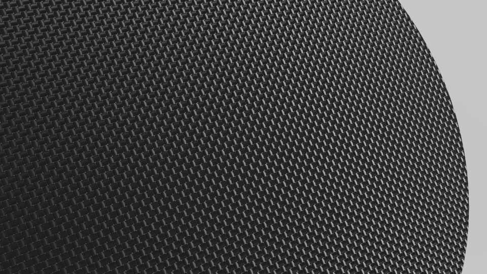

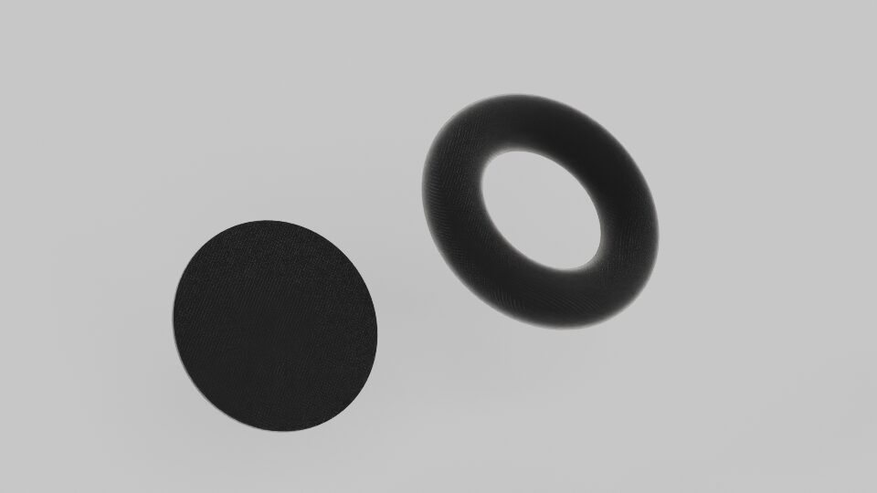
Fine plastic mesh grille effort S · 96 nodes
Real see-through holes; far away it becomes the right haze instead of moiré. On the 1 mm test disc each hole also shows the disc's back face (the dashes in the close-up): fine for a thin sheet, odd on a thick one.
- Real size
- holes Ø1.1 mm, 1.6 mm apart at 60° (43 % open)
- Direction from
- triplanar in the part's own axes
- Render cost
- 960 × 540: 53.8 s vs 35.4 s plain (+52 %) (product shot, 64 samples, 4-core CPU)
- Settings
- Hole size, Pitch
- Offered with
- Plastic matte (colour)
- Web 3D model
- holds (alpha mask) – pitch must divide 200 mm for a seamless tile

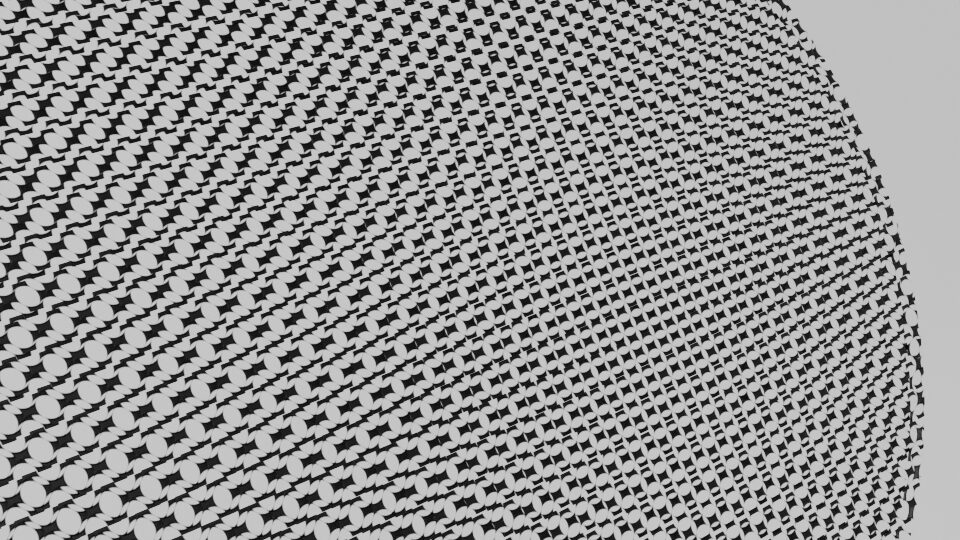

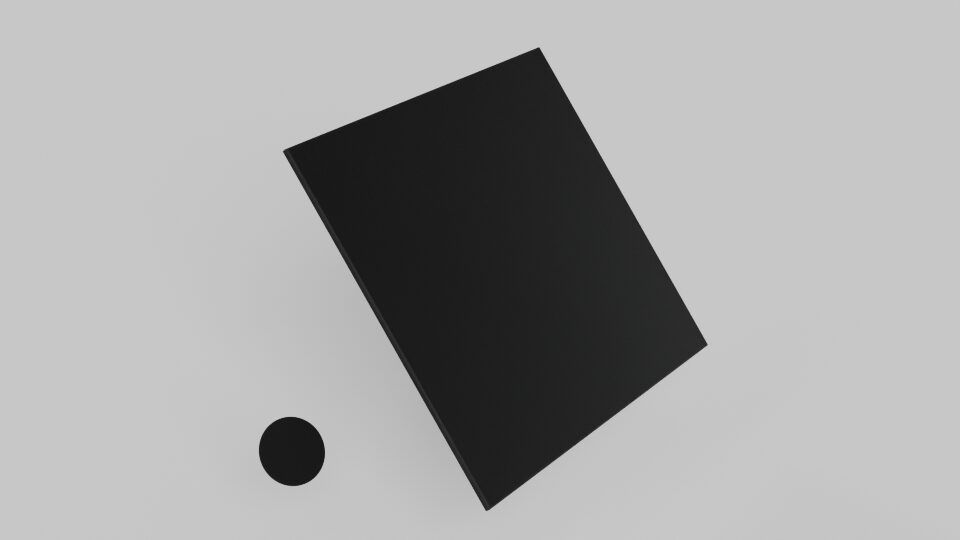
Soft-touch matte plastic / rubber effort S · 11 nodes
No pattern: the right numbers (rough 0.6, low specular, sheen) are the whole finish. Almost free.
- Real size
- no pattern; micro grain 0.025 mm (only in a macro shot)
- Direction from
- none (3-D noise)
- Render cost
- 960 × 540: 35.3 s vs 36.2 s plain (-3 %) (product shot, 64 samples, 4-core CPU)
- Settings
- none (colour)
- Offered with
- Plastic & rubber, colour from the group
- Web 3D model
- plain factors (sheen is lost)

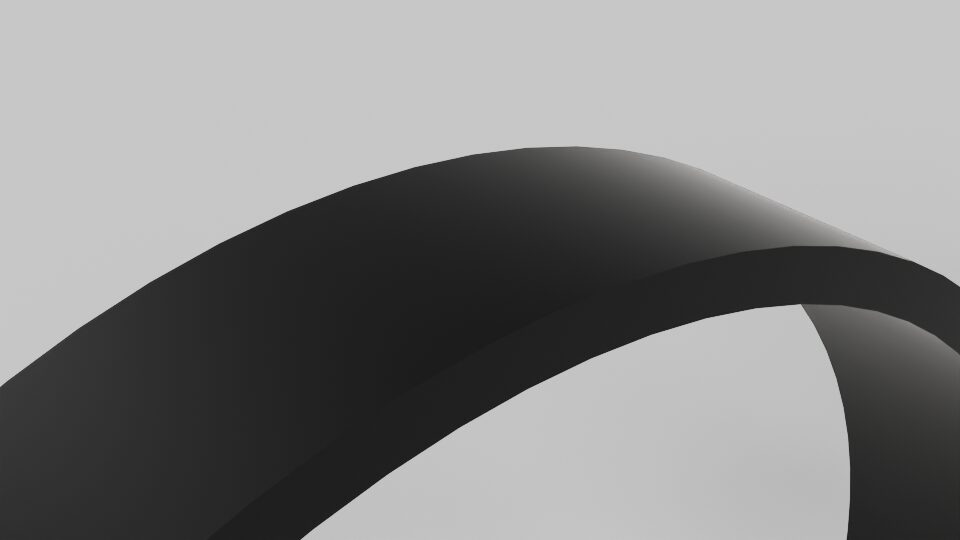

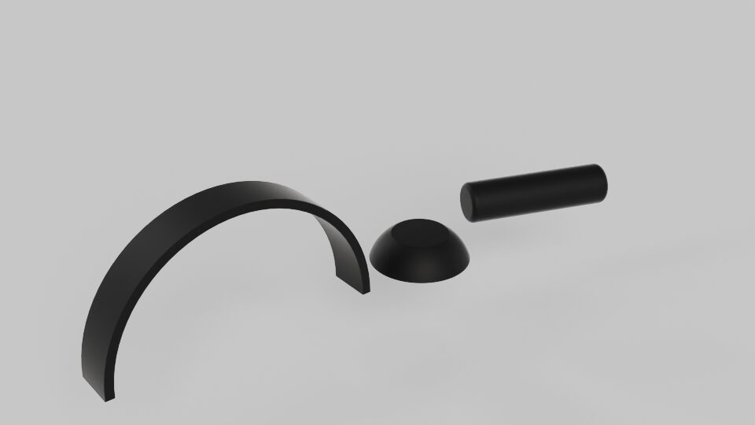
Bead-blasted metal effort S · 18 nodes
A finish every machine builder uses; cheap, one setting.
- Real size
- dimples ~0.1 mm (glass beads)
- Direction from
- none (3-D Voronoi)
- Render cost
- 960 × 540: 51.9 s vs 37.0 s plain (+40 %) (product shot, 64 samples, 4-core CPU)
- Settings
- Coarseness (fine / medium / coarse)
- Offered with
- Aluminium, stainless, steel, titanium
- Web 3D model
- average roughness

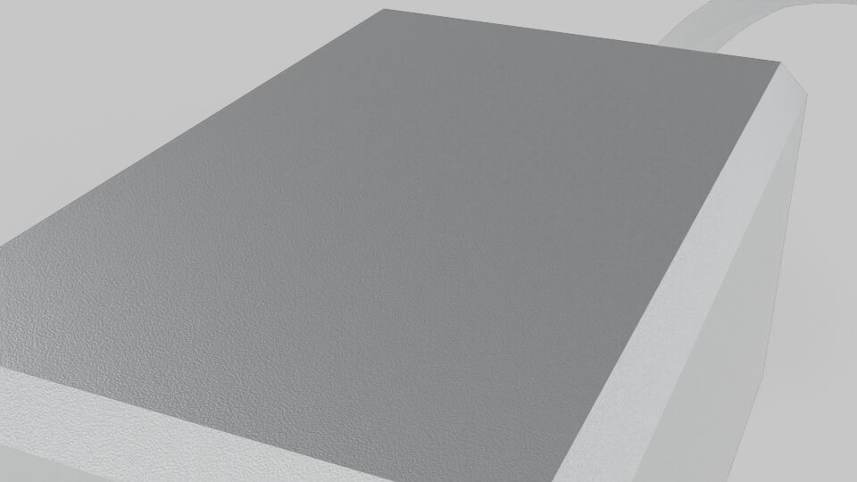

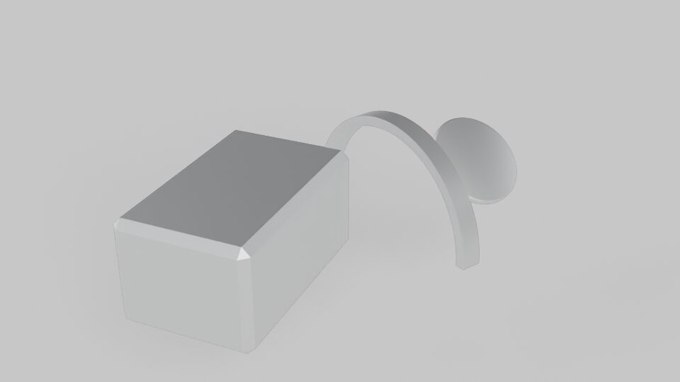
Shot-blasted steel (Sa 2½, before paint) effort S · 18 nodes
Bare steel before paint: cheap; good for frames and fabrication drawings.
- Real size
- dimples ~0.3 mm (steel grit)
- Direction from
- none (3-D Voronoi)
- Render cost
- 960 × 540: 61.7 s vs 36.6 s plain (+69 %) (product shot, 64 samples, 4-core CPU)
- Settings
- none
- Offered with
- Steel
- Web 3D model
- average roughness + colour

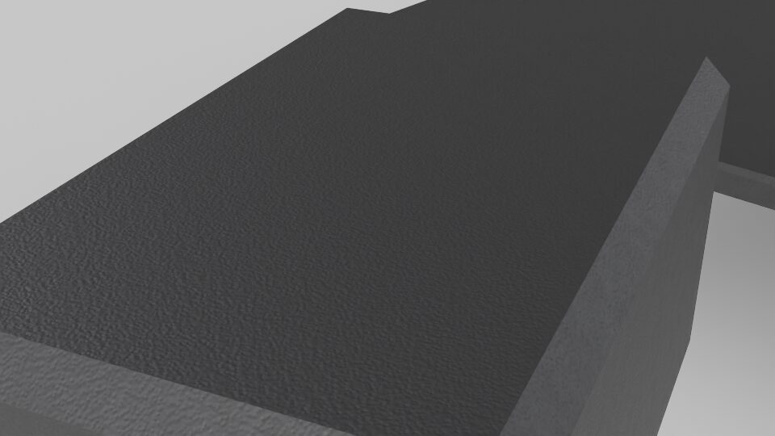

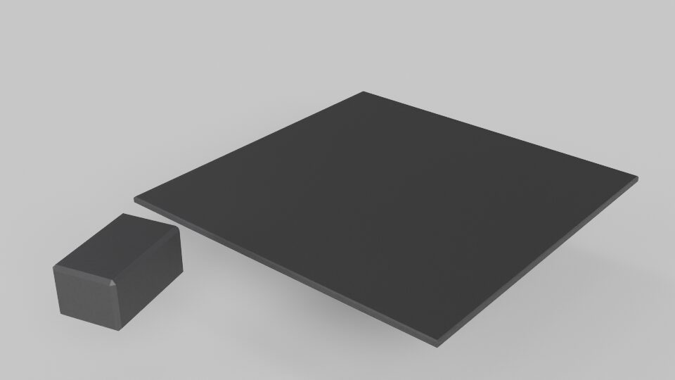
Hammertone paint effort S · 24 nodes
Classic machine paint; colour from the group.
- Real size
- hammer marks ~5 mm, metal flakes
- Direction from
- none (3-D Voronoi)
- Render cost
- 960 × 540: 63.9 s vs 36.8 s plain (+74 %) · 1920 × 1080: 236.1 s vs 139.4 s plain (+69 %) (product shot, 64 samples, 4-core CPU)
- Settings
- Mark size, colour from the group
- Offered with
- new Paint: hammertone (colour)
- Web 3D model
- holds (colour + normal, 5 mm marks)

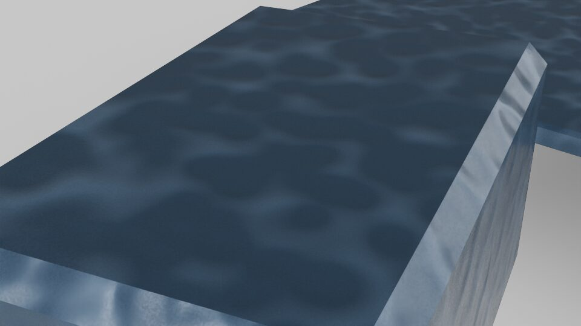

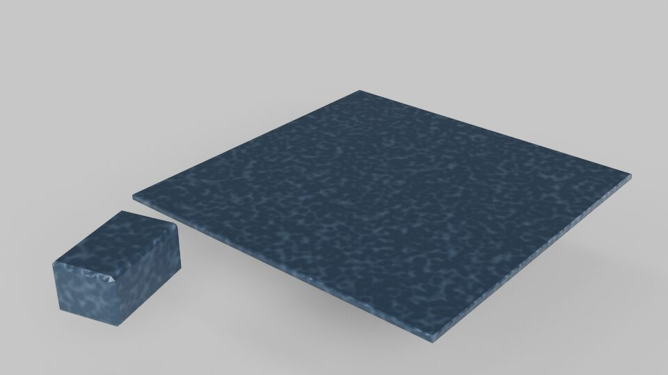
Wrinkle paint effort S · 22 nodes
Reads as a wrinkle structure up close; at product distance it is a slightly rough matte paint.
- Real size
- wrinkles ~1 mm
- Direction from
- none (3-D noise)
- Render cost
- 960 × 540: 40.1 s vs 38.4 s plain (+4 %) (product shot, 64 samples, 4-core CPU)
- Settings
- Size, colour
- Offered with
- new Paint: wrinkle (colour)
- Web 3D model
- holds at 2048

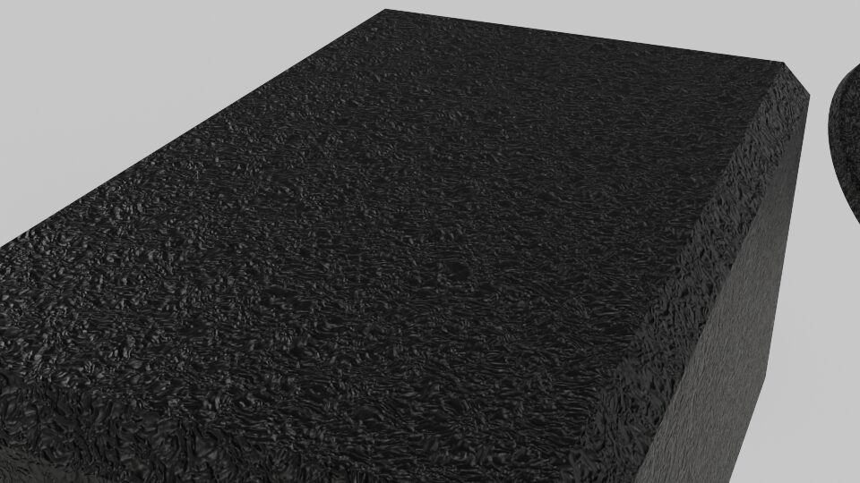

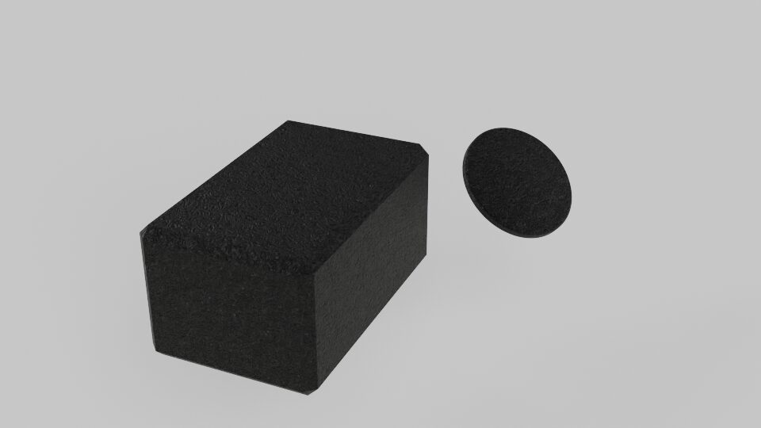
Anti-skid deck paint effort S · 21 nodes
Decks and walkways of the vessel and the machines; colour from the group.
- Real size
- grit ~1 mm, about half covered
- Direction from
- none (3-D Voronoi)
- Render cost
- 960 × 540: 41.7 s vs 36.5 s plain (+14 %) (product shot, 64 samples, 4-core CPU)
- Settings
- Grit size, colour
- Offered with
- new Paint: anti-skid
- Web 3D model
- holds

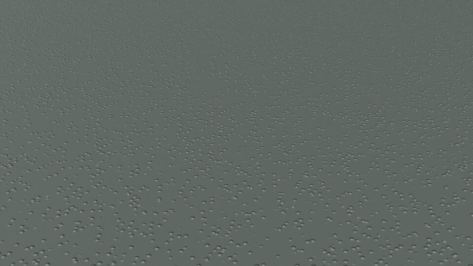

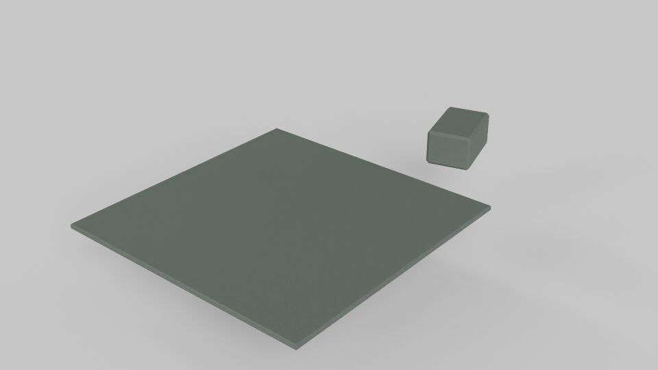
Tread plate (lens pattern) effort M · 114 nodes
Bump only: the lenses do not stand out of the silhouette (plate edges stay flat). Good from 0.3 m on.
- Real size
- lenses 22 x 6 mm, 25 mm grid (8 per 200 mm), relief 1.2 mm (bump only)
- Direction from
- the part's own box axes (one projection on flat faces)
- Render cost
- 960 × 540: 40.7 s vs 36.6 s plain (+11 %) · 1920 × 1080: 155.2 s vs 140.4 s plain (+11 %) (product shot, 64 samples, 4-core CPU)
- Settings
- Pitch, Angle of the pattern (0° / 90°)
- Offered with
- Aluminium, galvanized, steel raw, painted
- Web 3D model
- holds (8 lenses per 0.2 m tile, seamless)

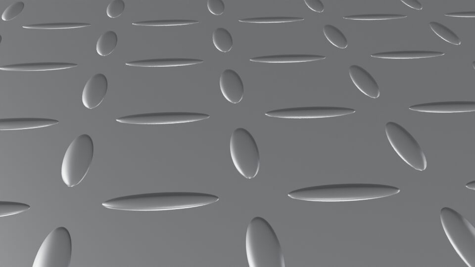

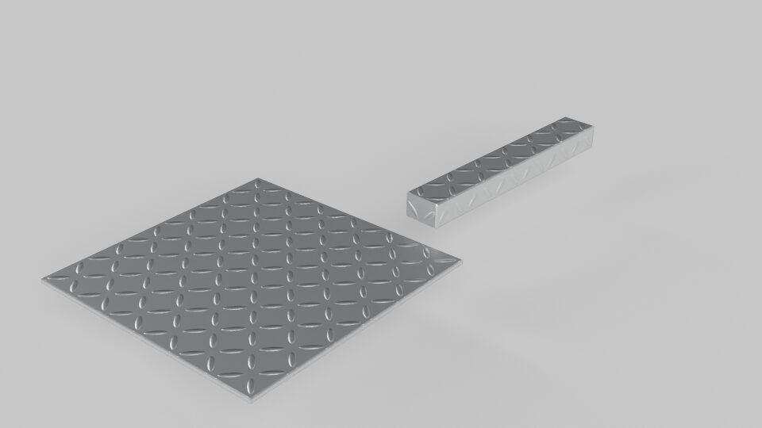
Perforated sheet effort S · 67 nodes
Guards, steps, covers; real holes; fades to the right see-through grey far away.
- Real size
- Rv 5-8: Ø5 mm holes, 8 mm apart at 60° (35 % open); also slotted Lv 4x20
- Direction from
- the part's own box axes
- Render cost
- 960 × 540: 41.1 s vs 35.7 s plain (+15 %) · 1920 × 1080: 150.0 s vs 132.8 s plain (+13 %) (product shot, 64 samples, 4-core CPU)
- Settings
- Hole Ø, Pitch, Round / Slotted
- Offered with
- Galvanized, stainless, aluminium, powder coat
- Web 3D model
- holds (alpha); hex rows do not divide 200 mm – a square pitch for the web or an own bake

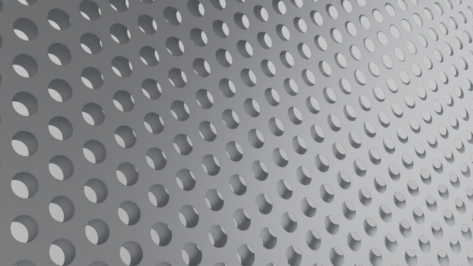

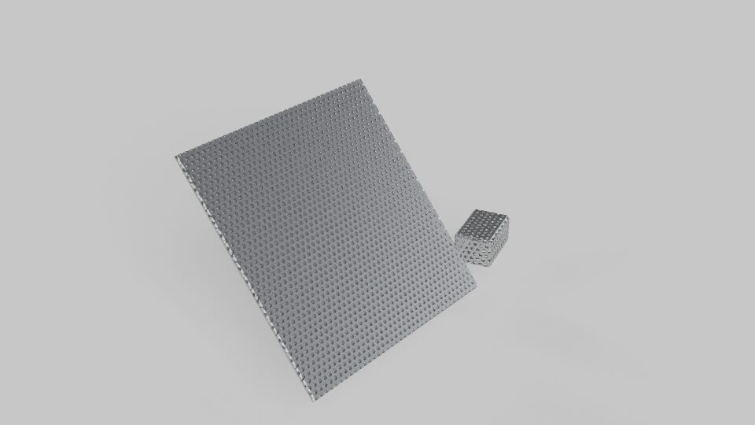
Expanded metal effort M · 102 nodes
Walkways and guards; the strands' slope is only a bump – no real thickness at the openings.
- Real size
- 43 x 13.5 mm openings, strands 2.2 mm
- Direction from
- the part's own box axes
- Render cost
- 960 × 540: 46.2 s vs 33.7 s plain (+37 %) (product shot, 64 samples, 4-core CPU)
- Settings
- Opening size
- Offered with
- Galvanized, steel
- Web 3D model
- holds roughly (alpha + normal)

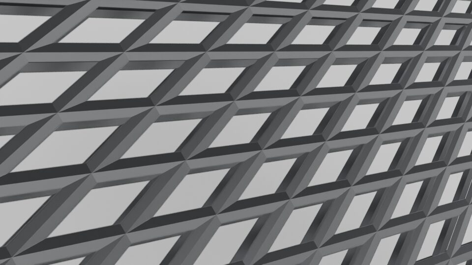

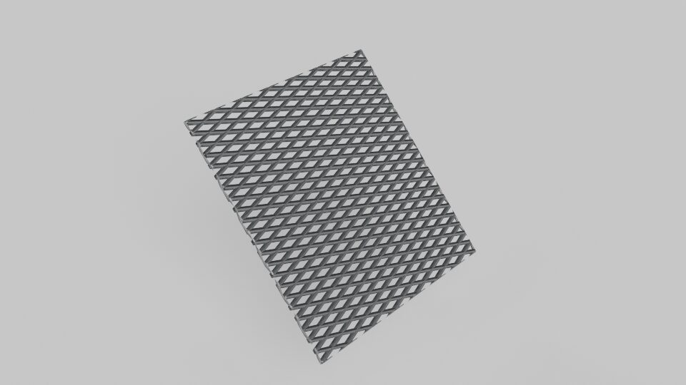
Carbon fibre twill 2x2 effort M · 60 nodes
The twill reads on flat faces; on the curved cup the box projection breaks the weave at 45° (a seam you can see). Fine for flat panels only.
- Real size
- 3K twill, tows 2 mm
- Direction from
- the part's own box axes (dominant projection, no blend)
- Render cost
- 960 × 540: 39.6 s vs 35.6 s plain (+11 %) · 1920 × 1080: 150.7 s vs 133.4 s plain (+13 %) (product shot, 64 samples, 4-core CPU)
- Settings
- Tow width, Gloss / Matte clear coat
- Offered with
- new: Carbon fibre
- Web 3D model
- colour + normal hold, the alternating sheen is lost

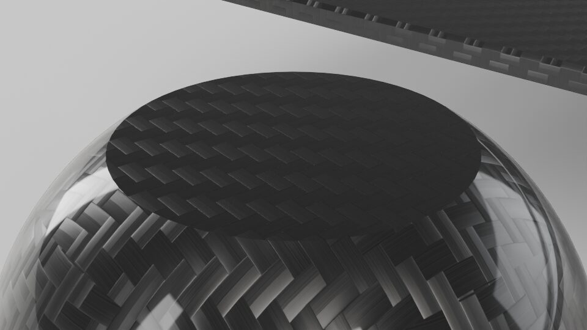

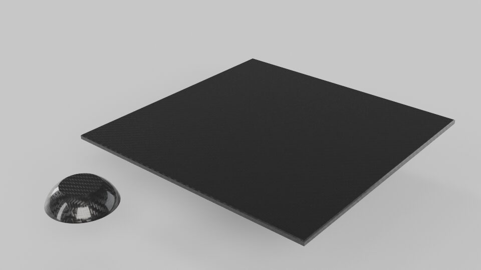
Spark-eroded texture VDI 3400 (24 / 30 / 36) effort S · 13 nodes
Mostly a roughness class with a fine grain in a macro shot; three classes look clearly different. Cheap.
- Real size
- VDI 24: Ra 1.6 µm, 30: 3.2 µm, 36: 6.3 µm; craters 0.05-0.15 mm
- Direction from
- none (3-D Voronoi)
- Render cost
- 960 × 540: 48.4 s vs 34.3 s plain (+41 %) (product shot, 64 samples, 4-core CPU)
- Settings
- Class (24 · 27 · 30 · 33 · 36)
- Offered with
- Plastic matte (colour)
- Web 3D model
- average roughness

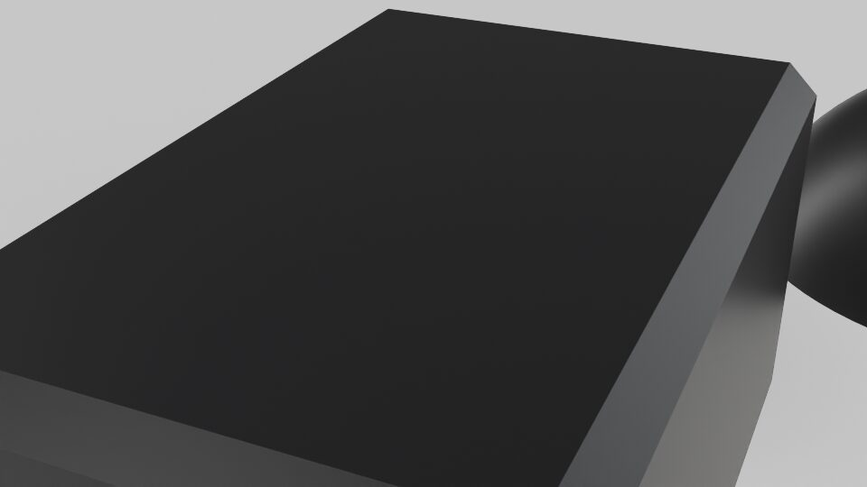


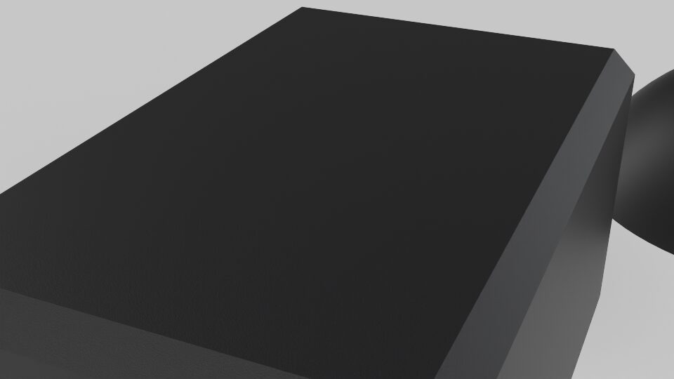

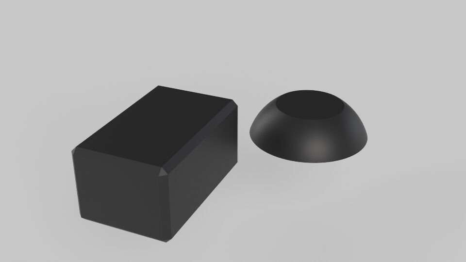

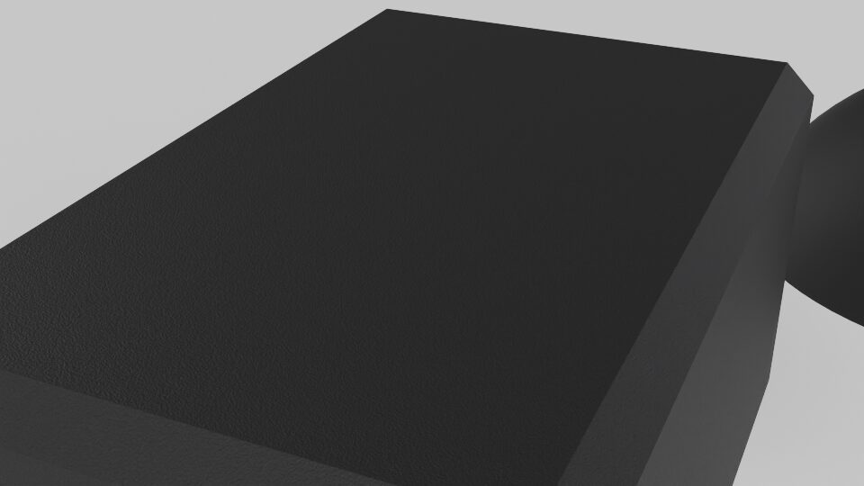

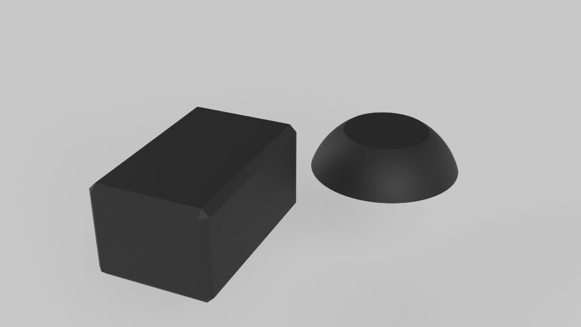
Moulded leather grain effort S · 23 nodes
Cushions, grips, housings; reads well from 0.2 m.
- Real size
- cells ~1.6 mm
- Direction from
- none (3-D Voronoi)
- Render cost
- 960 × 540: 38.1 s vs 36.1 s plain (+6 %) (product shot, 64 samples, 4-core CPU)
- Settings
- Grain size, colour
- Offered with
- Plastic matte / rubber (colour)
- Web 3D model
- holds (1.6 mm cells, ~8 texels)

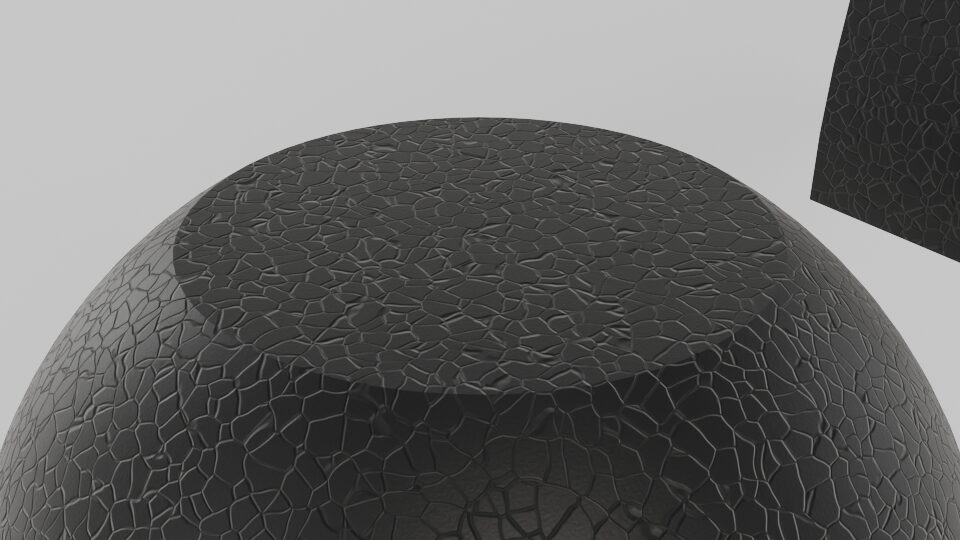

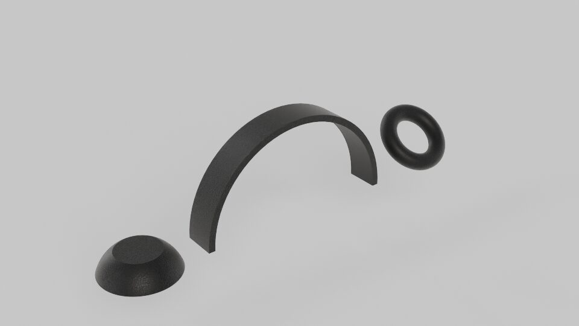
Hot-dip galvanised spangle effort S · 37 nodes
Big galvanised parts look much more real; crystals 9 mm.
- Real size
- crystals ~9 mm with feathery grain
- Direction from
- none (3-D Voronoi)
- Render cost
- 960 × 540: 46.4 s vs 36.3 s plain (+28 %) · 1920 × 1080: 187.5 s vs 136.0 s plain (+38 %) (product shot, 64 samples, 4-core CPU)
- Settings
- Crystal size (small / large / none)
- Offered with
- Hot-dip galvanized (a second look of it)
- Web 3D model
- colour + roughness hold, sheen per crystal lost

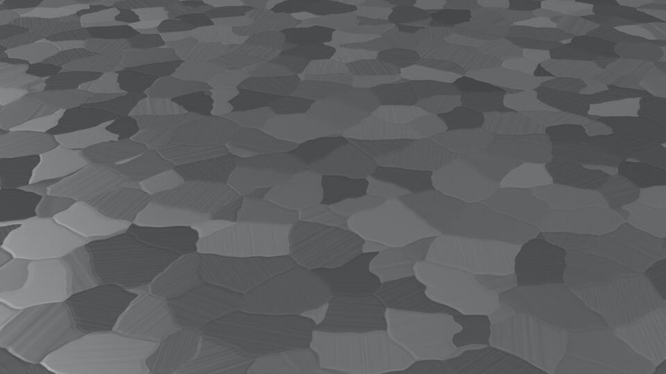

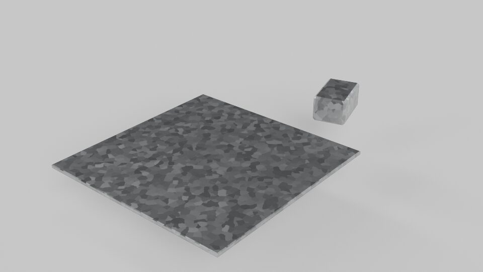
Weld bead + heat tint (stainless) effort L · 23 nodes
Looks right (rippled bead, straw → purple → blue tint) from a line kept on each part + a bead object. Needs a 'pick the seam' tool, a bead that follows the line and model-update care: a task of its own, not a finish. Tick it to ask for that task.
- Real size
- bead Ø8 mm, ripples 1.6 mm; tint bands to 16 mm
- Direction from
- a line kept on each part that touches it (object property) + a bead object
- Render cost
- 960 × 540: 36.7 s vs 36.7 s plain (+0 %) (product shot, 64 samples, 4-core CPU)
- Settings
- Pick two faces (the seam), Bead size, Tint width
- Offered with
- Stainless (tint), steel / aluminium (bead only)
- Web 3D model
- own bake of the bead; the tint needs a per-part bake

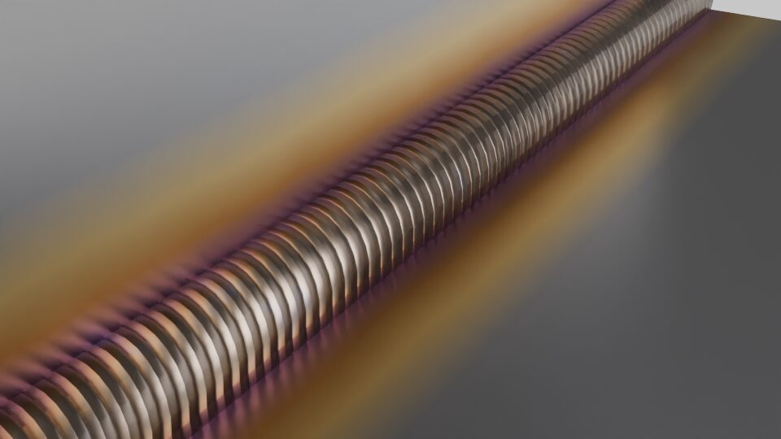

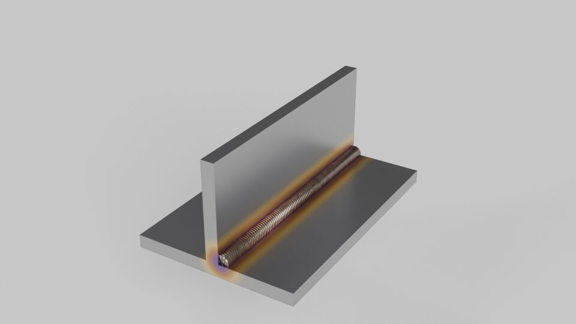
As-cast (sand-cast aluminium / iron) effort S · 22 nodes
Castings, housings; cast iron gets a better grain too.
- Real size
- sand grain ~0.5 mm, waviness ~30 mm
- Direction from
- none (3-D noise)
- Render cost
- 960 × 540: 52.1 s vs 36.8 s plain (+41 %) (product shot, 64 samples, 4-core CPU)
- Settings
- Aluminium / Iron
- Offered with
- new Metal: sand-cast aluminium; cast iron gets the grain
- Web 3D model
- holds

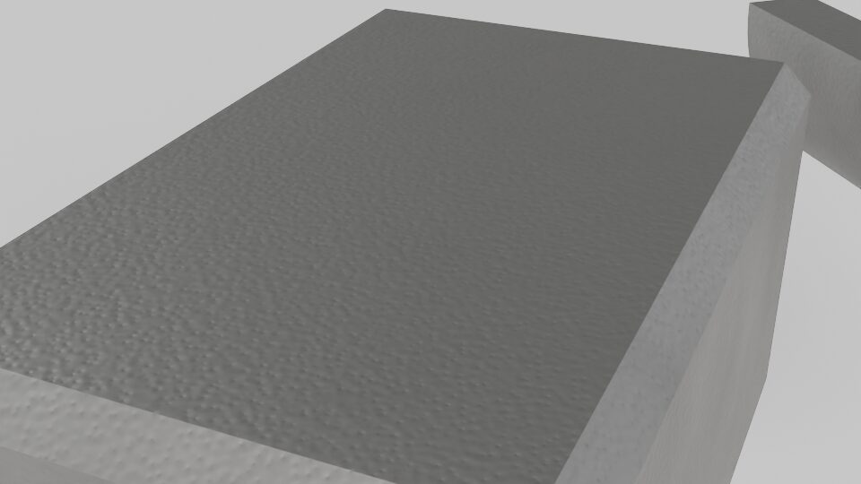

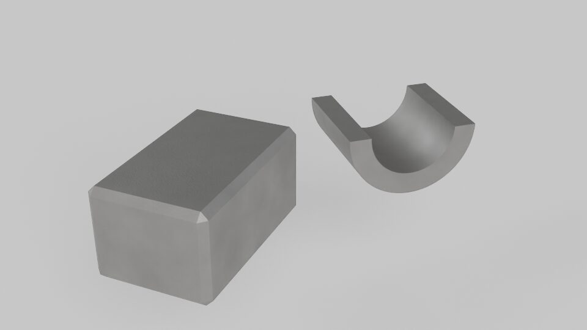
Rust layer (flash / heavy) effort M · 22 nodes
As a slider next to Wear (0 … 1), not a material: flash rust to heavy.
- Real size
- patches 10-40 mm, flakes ~3 mm
- Direction from
- none (3-D noise + AO)
- Render cost
- 960 × 540: 66.5 s vs 33.7 s plain (+98 %) (product shot, 64 samples, 4-core CPU)
- Settings
- a Rust slider 0…1 per group (like Wear)
- Offered with
- every bare steel / cast iron (as a slider, not a material)
- Web 3D model
- colour holds, the corner build-up (AO) does not


Honed cross-hatch in a bore effort S · 76 nodes
Only seen when a bore is cut open (section views); cheap add-on to the turned marks.
- Real size
- scratches ~0.4 mm apart, 50° included angle
- Direction from
- the bore's own axis + radius (round faces, inside)
- Render cost
- 960 × 540: 43.4 s vs 37.0 s plain (+17 %) (product shot, 64 samples, 4-core CPU)
- Settings
- Angle
- Offered with
- Steel ground / machined, cast iron
- Web 3D model
- average


Scraped / flaked machine ways effort S · 112 nodes
The flaked ways of a mill – a detail machine people recognise at once.
- Real size
- half-moons in 12 mm cells, turned 90° cell to cell
- Direction from
- the part's own box axes
- Render cost
- 960 × 540: 40.2 s vs 36.3 s plain (+11 %) (product shot, 64 samples, 4-core CPU)
- Settings
- Cell size
- Offered with
- Steel ground, cast iron (ways)
- Web 3D model
- holds (pitch 12.5 mm divides 200 mm)


Rubber with a moulded grip pattern effort S · 59 nodes
Same code as the knurl at 3 mm; flat ends stay plain.
- Real size
- truncated pyramids 3 mm at 45°
- Direction from
- the CAD face's own axis (round faces); flat faces stay plain
- Render cost
- 960 × 540: 34.8 s vs 32.5 s plain (+7 %) (product shot, 64 samples, 4-core CPU)
- Settings
- Pitch, colour
- Offered with
- Rubber
- Web 3D model
- average


Perlage / engine-turned spots (extra) effort M · 93 nodes
Reads more as scales than as overlapping brushed circles; would need more work. A niche (covers, watches).
- Real size
- spots Ø9 mm, 6 mm apart
- Direction from
- the part's own box axes
- Render cost
- 960 × 540: 37.6 s vs 34.4 s plain (+9 %) (product shot, 64 samples, 4-core CPU)
- Settings
- Spot size
- Offered with
- Stainless, aluminium
- Web 3D model
- the swirl's sheen is lost


Far away: no shimmer
The plate finishes at 4 m (a whole machine in the picture) and 15 m. Left: as built (a pattern finer than ~2 pixels fades to its average). Right: the fade switched off – regular holes and grids turn into moiré and sparkle. The crops are the centre, enlarged 2×.


Copies, turned, scaled, mirrored
Knurled knob (face axes) and scraped block (box axes): as imported, turned, scaled ×1.5, mirrored. The pattern sits the same on every copy; a scaled copy's pattern grows with it (Inventor parts are not scaled; 0274 can divide by the object's scale). Same STEP imported again (a model update): face data identical – BUSHING: yes, CAP: yes, KNOB: yes.
Thumbnails for the material picker (0273)
Proposed swatch: a chamfered block with a knurled knob on it and a spun cap leaning in front – shows marks, rings, knurl, holes and grain at once. 256 × 256 px, Cycles on the 4-core CPU, 32 samples + denoise:
| Material | 16 samples (s) | 32 samples (s) | EEVEE (s) |
|---|---|---|---|
| plain | 2.4 | 3.46 | 2.96 |
| knurl_diamond | 2.6 | 3.91 | 2.1 |
| spun | 2.4 | 3.86 | 1.93 |
| perforated | 2.67 | 3.96 | 1.85 |
| carbon | 2.6 | 3.79 | 2.15 |
| hammertone | 3.2 | 5.09 | 2.42 |
| crosshatch | 2.51 | 3.91 | 2.1 |
| rust | 3.31 | 5.42 | 2.52 |